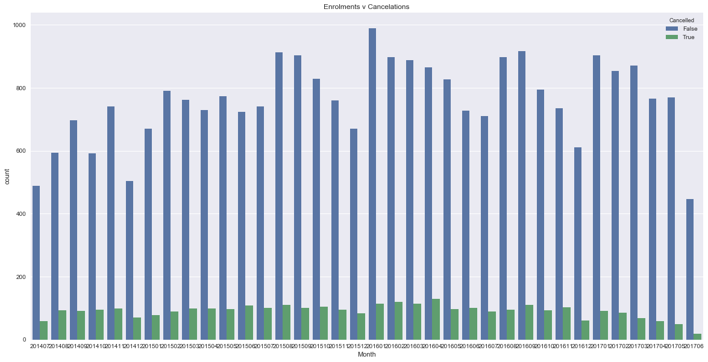

Cancellations at
General Assembly
THE PROBLEM
Not all enrolments start their course ...
Around 17.82% of all students cancel before their first day.
> Classification problem: Enrolments either (1) cancel or (2) become students.
> In the data, this is marked with a "CanceledDate" from which I needed to extrapolate a "Cancelled" column, with a Boolean response.
> 'Cancelled' == target variable.
END GOALS:
1. Know them
> To accurately predict whether a student will cancel from their course.
Knowing whether a student is likely to cancel can help identify how many students will end up starting a course, helping us predict income and spend outgoings more accurately.
2. Stop them
>To explore any actionable insights in preventing cancellations.
Of course, ideally we could stop cancellations from happening and all students who are enrolled will start their course. Perhaps a more realistic objective is to work towards preventing these students from enrolling in the first place.
THE SOLUTION
FINDINGS
THE PROCESS
THE PROCESS
STEP 1: EXPORT
STEP 2: EXTRAPOLATE
STEP 3: COMPLETE
STEP 4: STREAMLINE
STEP 5: DUMMY
STEP 6: VISUALISE
STEP 7: PICK A MODEL
STEP 8: TUNE
STEP 9: TEST
STEP 10: REPEAT
EXPORTING THE DATA
Thankfully we have all our data in accessible tables through Looker, so exporting the data wasn't a massive task...
Just downloading a CSV with 50,000 rows from Looker.
The variables we have on our data are wide-ranging but incomplete.
It wasn't hard to get a lot of information, but finding data that was consistently there for all the rows was a different story.
We ended up with some pretty nifty variables, including:
- Metro - which city were they enrolled in?
- Enrolment date - when were they enrolled?
- Enrolment day - what day of the week did they enrol?
- Course - which course did they enrol in?
- Expected Payment - how did we expect them to pay?
- Application Type - how did they apply?
- Pardot Category - how did they find General Assembly?
- Days between Enrolment and Invoice - how long between being enrolled and their payment due date?
- Days between Enrolment and Start Date - how long between being enrolled and their course starting?
- Days between Lead and Enrolment - how long before they were enrolled?
EXTRAPOLATING THE DATA
Some data I wanted wasn't in the data as it was exported. I needed to add these columns based on other variables.
I added our target column - "Cancelled" based on other columns, as well as an "APAC" column for regional explorations.
enrolments['APAC'] = enrolments['Metro'].isin(['sydney','melbourne','hong-kong','singapore','brisbane'])
COMPLETING THE DATA
As mentioned, most of the more recent data was fully complete, but some of the older rows had missing values.
Some of the columns I just deleted because they'd been filled in a long time ago, but not since then.
I cleared a lot of the missing data by limiting the data to post mid-2014 and pre mid-2017.
enrolments = enrolments[enrolments.EnrolDate < 20170630]
Other null values were relatively easy to fix using the mean or simply entering "Unknown" for categorical variables, e.g. 'Metro', 'Course', 'Type', 'ExpectedPayment', 'ApplicationType', 'PardotCategory', 'EnrolDay'.
enrolments.ExpectedPayment.fillna("Unknown", inplace=True)
STREAMLINING THE DATA
Some of the data categories - Pardot Category, Application Type and Expected Payment Method - had ad hoc entries as well as clear categories.
I limited these to only those categories with over 100 entries.
This got rid of entries with unusual entries without skewing the data.
enrolments = enrolments[enrolments.ApplicationType.isin(commonapptypes)]
DUMMYING THE DATA
Some algorithms will only accept numerical or boolean inputs, so the categorical data had to be 'dummied up'.
This obviously created a lot more columns - I ended up with 103 columns and 39,524 rows.
dummydata.shape
>(39524, 103)
VISUALISING THE DATA
I then did a bit of exploratory data and distilled some interesting insights into our enrolment data:
Cancellations by month
Although enrolment numbers are down, cancellations are steady:
Cancellations by metro
Sydney actually has a lower rate of cancellations than other metros:

Payment methods
Students who are paying by private loan or on their own pocket are more likely to cancel than employer-paid:

Days from Enrolment to Startdate
Students enrol close to the start date of their course:

CHOOSING THE MODEL
XYZ
TUNING THE MODEL
XYZ
TESTING THE MODEL
XYZ
REPEAT
XYZ